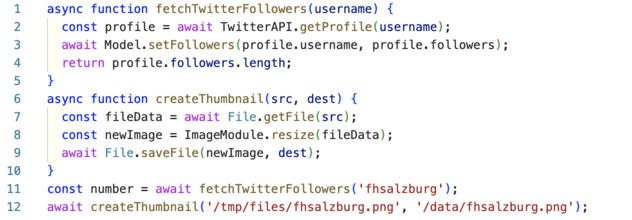

▻
Node.js Basics
Node.js is just a javascript interpreter
with a very small library added. With node
you build your web server from scratch.
After working through this guide you should
- know how to install libraries for node.js with npm
- be able to write a simple web server
▻
Node.js was originally written by Ryan Dahl in 2009
as a combination of two pieces of software that
already existed:
To this he added a library written in Javascript.
In 2010 npm was added as a package manager for
Javascript Libraries.
▻

In 2023, according to openhub
the node projects consist of:
- the node library: 1,6 millions lines of Javascript code
- node bindings: 2,5 millions lines of C code
- v8: 2,3 millions lines of code written in c++
- libuv: 100.000 lines of C code
▻
You write your program in Javascript:
console.log("Hello World");
and run it with the node command:
$ node hello.js
Hello World
You can also use node interactively:
$ node
> console.log("Hello World");
Hello World
undefined
> 1+2
3
> [CTRL]-[D]
▻
Node Versions change fast. The node version manager (nvm) makes
it easy to switch between versions:
$ nvm use 16.19
Now using node v16.19.0 (npm v8.19.3)
$ nvm use stable
Now using node v20.2.0 (npm v9.6.6
An alternative would be to use rtx, which
can also handle other languages like ruby, php, python.
▻
To create a very simple Webserver we can use the package http:
import * as http from 'http';
const hostname = '127.0.0.1';
const port = 3000;
const server = http.createServer((req, res) => {
res.statusCode = 200;
res.setHeader('Content-Type', 'text/plain');
res.end('Hello Web\n');
});
server.listen(port, hostname, () => {
console.log(`Server running at http://${hostname}:${port}/`);
});
$ node app.js
Server running at http://127.0.0.1:3000/
▻
Node had it's own package system called CommonJS, using the keyword require.
Since node 13 you can also use ECMAScript modules with the keyword import.
Use the type field in package.json to switch to ECMAScript modules,
or use extension .cjs for CommonJS and .mjs for modules.
// package.json
{
"type": "module"
}
Use barewords to import packages from node_modules, and relative
paths for your own source files:
import * as http from 'http';
import * as config from './config/index.js`;
npm was the first package manager for node.js. Today
there are many alternatives, from yarn to pnpm.
▻
You have worked with Javascript and asyncronous programming before.
function f() {
console.log("foo");
setTimeout(g, 0);
console.log("baz");
h();
}
function g() {
console.log("bar");
}
function h() {
console.log("blix");
}
el.addEventListener("click", f);
If this code runs in the browser, the output on the console will be:
- foo
- baz
- blix
- bar
▻
PHP and Ruby on Rails have the same basic processing model. It is either
implemented with threads or with processes.
- when the webserver first starts, a number of threads are started
- when a http comes in, it is handled by one thread from beginning to end
- the thread will probably spend some time waiting for slow I/O, like a database response
Apache comes with a module server_status that displays the
processes/threads and their status on a webpage. Here an example:

As you can see the server is running in prefork mode: when
the server is started it forks a certain number of worker processes,
but it can also fork additional worker process later on.
Currently 56 requests are being processed, 8 worker processes are
idle, and there are a lot of additional slots for additional worker
processes.
If your server runs into trouble you can use the server_status
for debugging.
▻
Using syncronous I/O the program code will look something like this:
file = File.open(file_name, "r") # takes a long time, thread has to wait
data = file.read # takes a very long time, thread has to wait
file.close
As each thread comes with a fixed overhead of memory demand, you
can only start so many threads on a given machine. You configure this
in the web server configuration, e.g.
- when running PHP with apache and PHP-FPM with the configuration directives
pm.max_children, ``pm.start_servers,pm.min_spare_servers,pm.max_spare_servers, see php.net
- when running Rails with Passenger with the configuration directives
PassengerMinInstances und PassengerMaxPoolSize, see phusionpassenger.com
Node has a completely different model:
- there is one thread running the javascript event loop
- if the thread is free, it picks up the next event from the event queue. this might be a new http request
- all I/O is done asynchronosly: the main thread hands off the request to the database to a new, separate thread from a thread pool. When the request is done, and the data is available, this is added as a new event to the event queue
- after starting an asynchronos thread, the main thread immediately contious working
Doing asyncronous I/O is implemented using callbacks in Javascript, and will look
something like this:
import { readFile } from 'node:fs';
console.log("first");
readFile(file_name, (err, data) => {
if (err) throw err;
console.log("... much later, third");
console.log(data);
});
console.log("second");
If this is the whole program, the main thread will become free after
printing out second. It will pick up something else to do from
the event queue. Much later, when the data from the file has been
loaded, it will find the callback funktion on the event queue, and
finally reach third.
Node also offers the use of promises or async await:
import { readFile } from 'node:fs/promises';
const filePath = 'package.json';
const contents = await readFile(filePath, { encoding: 'utf8' });
The main thread will become free at await. It will pick up something else to do from
the event queue. Much later, when the data from the file has been
loaded, the program will continue with assigning the data to the constant contents.
▻


▻
Describes two kinds of performance bottlenecks
- An I/O-bound application waits most of the time for network, filesystem and database.
Running on a faster CPU would not help.
- A CPU-bound application spends most of the time using the CPU, running on a faster CPU would help.
The node process model helps with I/O-bound applications: If your app is I/O-bound, the event loop will be able to serve many requests, while other threads handling the acutal I/O will run on other kernels
If one aspect of your app is CPU-bound it will monopolize that kernel,
(other) requests cannot be served. Therefore node and is not well suited for CPU
bound applications.
▻
Streams are a basic bilding block of a node application.
Without streams, you have to read the whole file before
you can send it:
import { readFile } from 'node:fs/promises';
const server = http.createServer(async (req, res) => {
const filePath = 'package.json';
const contents = await readFile(filePath, { encoding: 'utf8' });
res.statusCode = 200;
res.setHeader('Content-Type', 'text/plain');
res.end('Hello Web: ' + contents);
});
Better: connect a stream reading the file to the stream
that is the HTTP response:
import { createReadStream } from 'node:fs';
const server = http.createServer(function(req, res) {
const filePath = 'package.json';
var readStream = createReadStream(filePath);
res.setHeader('Content-Type', 'application/json');
readStream.pipe(res);
})
.pipe() takes care of listening for 'data' and 'end' events from the fs.createReadStream(). This code is not only cleaner, but now the data.txt file will be written to clients one chunk at a time immediately as they are received from the disk.
Using .pipe() has other benefits too, like handling backpressure automatically so that node won't buffer chunks into memory needlessly when the remote client is on a really slow or high-latency connection.